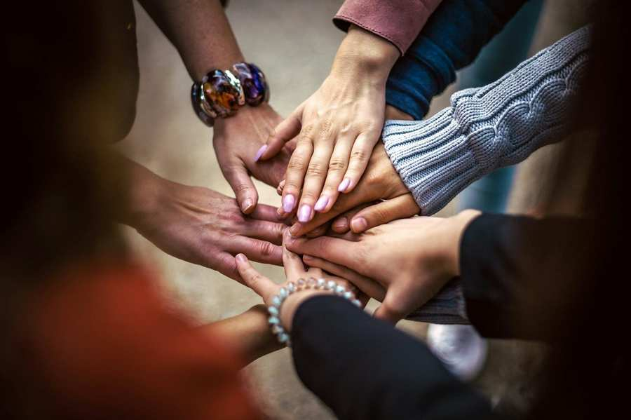
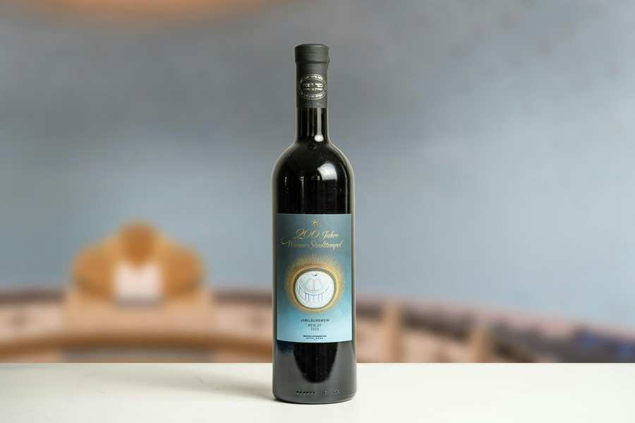
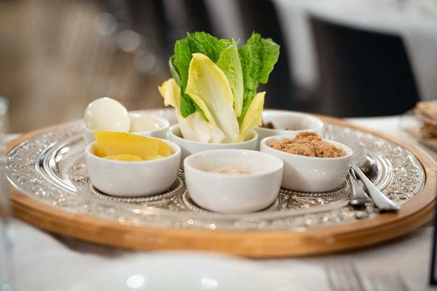
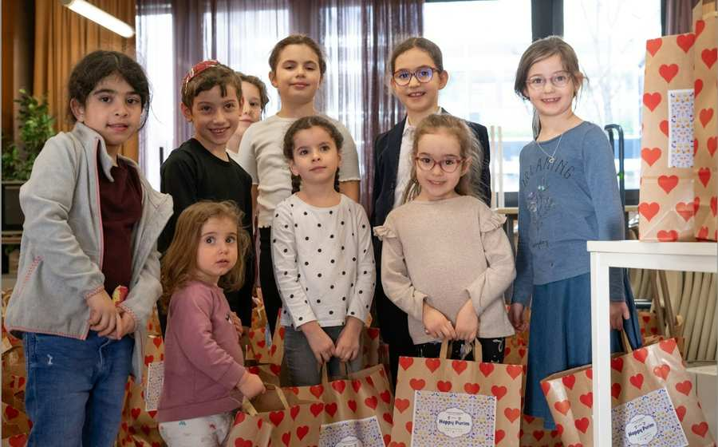
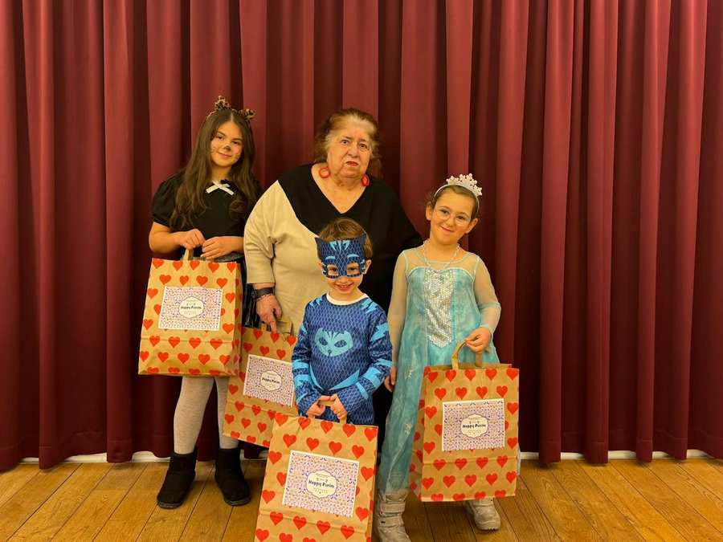
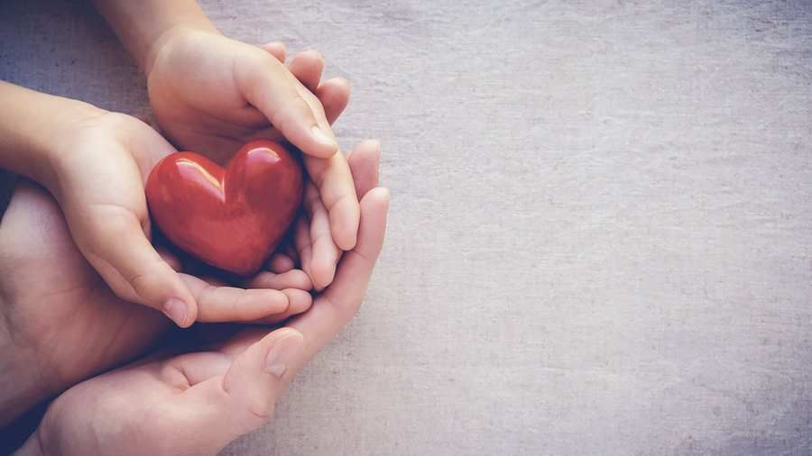
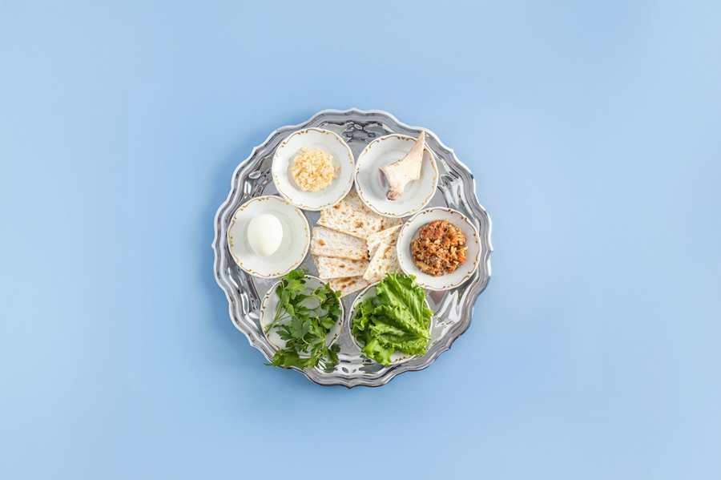
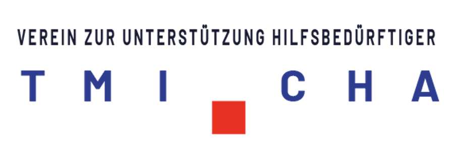

Tmicha: Социальная и благотворительная деятельность
Tmicha: Социальные и благотворительные новости

Ханука Справка 2026: Один свет освещает другой
Ваучер на питание на сумму 200 евро на человека для нуждающихся членов сообщества - пожертвуйте сейчас или до 16 ноября. подать заявку.

Всем надежды в Новом году – Рош ха-Шана поможет нуждающимся!
Рош ха-Шана – особенное время: мы делаем паузу, оглядываемся назад на прошедший год и думаем о том, что мы можем сделать в следующем году...

Чтобы каждый мог достойно отпраздновать Песах — ваше пожертвование имеет значение!
Для Песах мы просим пожертвование для нуждающихся людей в сообществе. Ваша помощь покрывает расходы на еду и энергию. Подарите с...

С душой: наша кампания «Мишлоах Манот» к Пуриму
Этот год, несмотря на все кризисы, еще раз показывает, что наша община не только вместе празднует Пурим, но и вместе помогает. В этом году...

Сделайте пожертвование прямо сейчас на кампанию Пурим Мишлоах Манот!
Это особый и важный обычай – раздавать продуктовые наборы (Мишлоах Манот) социально незащищенным членам общины в Пурим. Джем...

Подарите Ханука надежду своим пожертвованием!
В то время, когда мы в течение восьми дней зажигаем свечи на Хануку и вспоминаем чудо, мы также хотим пролить свет на помощь...
Сделайте пожертвование сейчас и помогите нуждающимся семьям!
Представьте: маме приходится объяснять ребенку, почему сегодня опять нечего есть. Большая семья сидит ледяной зимой...

Подарите надежду нуждающимся семьям Песах!
Безработица и инфляция вызывают огромные финансовые трудности для многих членов сообщества, включая семьи с маленькими детьми. Затронутый...
Израильская община и ее члены стремятся способствовать благополучию своих членов даже в трудных ситуациях. По этой причине Израильская община создала социальную комиссию, в которую вошли все фракции, чтобы помочь членам в трудные времена.
Мы также предлагаем членам возможность сделать что-то хорошее посредством пожертвований и проектов.

Благотворительная организация Israelitische Kultusgemeinde Wien (Еврейская община Вены), TMICHA, была основана в 2009 году, и с тех пор ее основной миссией является предоставление семьям, находящимся в чрезвычайных и кризисных ситуациях, поддержки там, где это необходимо. В центре внимания всегда находится помощь людям помочь самим себе. В соответствии с нашим видением – миром надежды и социальной справедливости – наша цель – помочь пострадавшим, предоставляя всесторонние консультации, а также продовольствие и финансовые мосты.
Будьте рядом друг с другом. Помощь, когда кто-то нуждается в нас. Это принципы ТМИЧА!
Социальные сети в IKG
Пожертвовать
Отдел по сбору средств собирает пожертвования и использует их для наведения мостов между людьми в сообществе.
БолееГМАЧ для детской одежды и аксессуаров
Одежду и игрушки для детей можно обменять на обменной площадке GMACH.
БолееФраншиза пожертвования
Пожертвования в пользу TMICHA не подлежат налогообложению с 1 января 2009 года. Согласно рег. нет. SO 1324 TMICHA можно найти в списке получателей пожертвований на домашней странице Федерального министерства финансов - http://bmf.gv.at.
С 2018 года ваши пожертвования автоматически отправляются в налоговую инспекцию. В результате изменений в законе мы должны регистрировать все пожертвования, сделанные начиная с 2017 года, а затем сообщать о них в налоговую инспекцию в следующем году. После этого они будут автоматически учтены при оценке вашего сотрудника. Обязательным условием для этого является то, что вы предоставляете нам свое имя и фамилию, а также дату рождения. В идеале вам также следует сообщить нам свой адрес, чтобы мы могли связаться с вами, если у нас возникнут вопросы.
Чтобы иметь возможность потребовать свое пожертвование для целей налогообложения, пришлите нам свое имя и фамилию согласно регистрационной форме (см. регистрационную форму) и дату рождения.
Дополнительную информацию о вычете пожертвований можно найти здесь:
Наши банковские реквизиты:
ТМИЧА – АССОЦИАЦИЯ ПОДДЕРЖКИ НУЖДАЮЩИХСЯ
IBAN: AT43 6000 0005 1001 0051
БИК: OPSKATWW
Пожертвование-спонсорство
Спонсорство TMICHA – это особый способ помощи: вы можете поддержать тех, кто нуждается в помощи, в любом кризисе, в долгосрочной перспективе и на устойчивой основе!
Чесированный
Взяв на себя спонсорство «Чессед», вы помогаете матерям-одиночкам, многодетным семьям, пожилым и больным людям справляться с повседневными делами. Расходы на питание, одежду или средства гигиены гарантированы с вашей помощью. За 54 евро в месяц ваша спонсируемая семья получит длительное облегчение.
цдака - помощь при ударах судьбы
Взяв на себя спонсорство цдака, вы помогаете людям, которые в одночасье оказались в финансовых трудностях из-за удара судьбы, например, болезни или безработицы. Пострадавшие не могут погасить задолженность по аренде и счета за электричество. TMICHA помогает здесь разовыми грантами, которые можно использовать для удовлетворения потребностей. Вы можете поддержать свою спонсируемую семью на 120 евро в месяц!
Поздравляем пожертвование
В совокупности многочисленные поздравительные пожертвования могут оказать большую помощь нуждающимся семьям. Воспринимайте следующее торжество как возможность сделать добро!
Поводов поздравить родных, друзей и знакомых множество. Например, на праздники, как благодарность за удачный вечер, за помолвку, день рождения, рождение, бар и бат-мицва и т. д.
Совместите свой следующий праздник с добрым делом. Поделитесь своим счастьем и сделайте счастливыми других. Верно девизу: Пожертвования вместо подарков!
Вот как это работает
TMICHA отправляет поздравительную открытку (см. рисунок) с вашим очень личным сообщением и сообщает получателю, что было пожертвовано на ваше имя.
TMICHA также будет рада организовать кампанию по сбору средств для близкого Вам проекта, в которой смогут принять участие все гости и доброжелатели.
Мы с нетерпением ждем встречи с вами!
Волонтерство
Мы всегда ищем людей, у которых есть несколько свободных часов для самых разных сфер деятельности:
- Упаковка или доставка посылок по особым случаям или праздникам, например, Пуриму.
- Шахматный собеседник или собеседник для жителей Центра Маймонида
Даже если вы еще не знаете, где именно и как вам лучше всего помочь, просто свяжитесь с нами! Мы вместе обсудим, как вам лучше принять участие.
Мы с нетерпением ждем встречи с вами!
Пожертвования в натуральной форме
TMICHA приветствует пожертвования в натуральной форме, которые находятся в хорошем состоянии и пригодны к использованию. Например:
- Товарные ваучеры
- Билеты в театр, вход в музеи, концерты классической музыки
- Потребности в уходе и реабилитации: инвалидная коляска, костыли, трости, кресло для тела, регулируемая кровать для людей, нуждающихся в уходе, подъемник для ванны и т. д.
- Комплектные и рабочие компьютеры (для семей со школьниками или студентами), телевизор.
Что еще важно:
- TMICHA не может принимать продовольственные пожертвования, поскольку нет складских помещений.
- К сожалению, мы не можем принять одежду из-за стоимости. У нас нет склада и персонала для организации системы дистрибуции.